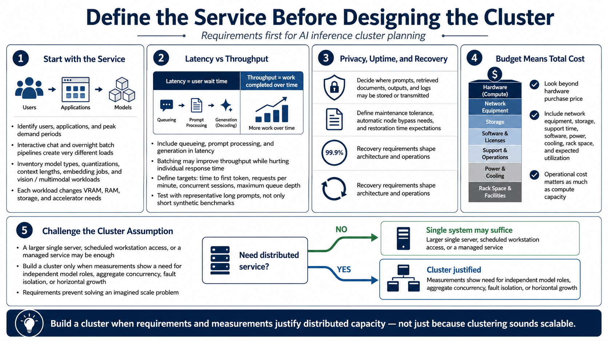

Defining Cluster Requirements
Connecting to LMS... Progress: in progress

Narration
Define the service before designing the cluster. Identify who will use it, which applications will call it, and when demand occurs. Ten analysts using interactive chat create a different load from an overnight document-processing pipeline. Inventory model types, quantizations, context lengths, embedding workloads, and any vision or multimodal processing. Each combination has distinct VRAM, system memory, storage, and acceleration requirements.
Separate latency from throughput. Latency is the time a user waits for useful output, including queueing, prompt processing, and generation. Throughput is the amount of work completed over time. Batching may improve total throughput while increasing the wait for an individual request. Define targets such as acceptable time to first token, requests per minute, concurrent sessions, and maximum queue depth. Use representative prompts because short synthetic tests can hide the cost of long contexts.
Document privacy, uptime, and recovery expectations. Determine where prompts, retrieved documents, model outputs, and logs may be stored or transmitted. Decide whether planned maintenance is acceptable, whether a failed node must be bypassed automatically, and how long service restoration may take. Convert budget into more than purchase price: include network equipment, storage, support time, software, power, cooling, rack space, and expected utilization.
Finally, challenge the cluster assumption. A larger single server, scheduled access to one workstation, or a managed service may satisfy the requirement with less operational burden. Build a cluster when measurements show a need for independent model roles, aggregate concurrency, fault isolation, or horizontal growth. Requirements protect the project from solving an imagined scale problem while overlooking the cost of operating a real distributed system.